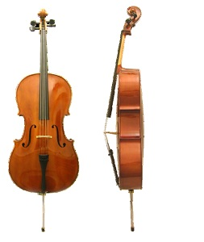
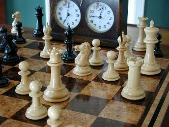

Schools I have attended or visited for an extended period of time:
Stanford University
Cal Poly San Luis Obispo
UCLA
ENS de Cachan - Centre de Mathématiques et de Leurs Applications
UNC Chapel Hill

| Home | CV | Research | Teaching | Personal |
|
Music I have been playing the cello since age 8, and I love listening to classical music and going to concerts. Some of my favorite links: KUSC LA Philharmonic |
 |
|
Mind Games I also like playing chess, board games, card games, and basically any sorts of puzzles. Game and puzzle-related links: Harvard's Putnam Competition Site US Chess Federation Chess Puzzles The rules for a game called "Clubs" co-invented by me |
 |
|
Schools Schools I have attended or visited for an extended period of time: Stanford University Cal Poly San Luis Obispo UCLA ENS de Cachan - Centre de Mathématiques et de Leurs Applications UNC Chapel Hill |
|
|
|